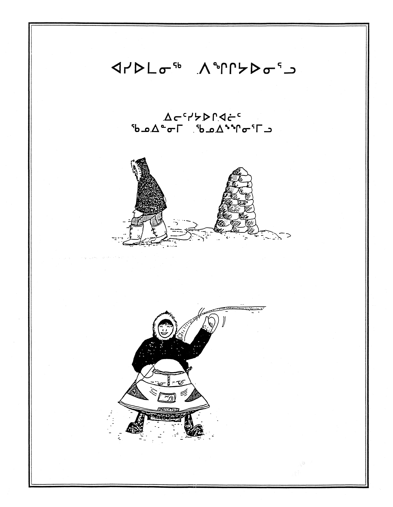

1
Mitiarjuk Attasie Nappaaluk est l’autrice du premier roman écrit en inuktitut, Sanaaq. Elle ne s’est pas contentée d’utiliser ses crayons de bois jusqu’à la gomme pour rédiger le manuscrit de son roman, devenu un classique de la littérature inuite. Écrivaine, artiste et éducatrice, elle a enseigné et participé à l’élaboration du programme d’études de la commission scolaire de la région, aujourd’hui appelée Kativik Ilisarniliriniq, tout en rédigeant plus de vingt livres et une série d’illustrations éducatives pour transmettre aux élèves du Nunavik ses connaissances, son vocabulaire, et ses histoires.
Mitiarjuk Attasie Nappaaluk is the author of the first Inuktitut novel, Sanaaq, now a classic of Inuit literature. She wore down her pencil to the eraser writing the manuscript, but did not stop there. Writer, artist and educator, she taught and participated in curriculum development for the region’s school board, now called Kativik Ilisarniliriniq, while authoring over twenty books and a series of educational illustrations to pass on her knowledge, language, and stories to the students of Nunavik.
Crayon à mine ayant appartenu à Mitiarjuk Attasie Nappaaluk / ᒥᑎᐊᕐᔪᒃ ᐋᑦᑕᓯ ᓇᑉᐹᓘᑉ ᐊᓪᓚᐅᑎᕕᓂᖓ / Pencil Belonging to Mitiarjuk Attasie Nappaaluk
Bois, métal et graphite / ᕿᔪᖅ, ᓴᕕᕋᔭᖅ ᐊᒻᒪᓗ ᐅᔭᕋᖅ / Wood, Metal and Graphite
Prêt de la famille Nappaaluk / ᓇᑉᐹᓗᒃ ᐃᓚᒌᓂᑦ ᐊᑦᑕᑐᕐᑕᖅ / Loan from the Nappaaluk Family


Matériel éducatif / ᐃᓕᓐᓂᐊᑎᑦᓯᐅᑎᑦᓭᑦ / Teaching Material
Mitiarjuk Attasie Nappaaluk / ᒥᑎᐊᕐᔪᒃ ᐋᑦᑕᓯ ᓇᑉᐹᓗᒃ
Kuujjuaq : Kativik Ilisarniliriniq / ᑰᔾᔪᐊᖅ : ᑲᑎᕕᒃ ᐃᓕᓴᕐᓂᓕᕆᓂᖅ
Reproductions / ᐊᑦᔨᓕᐊᕆᓯᒪᔪᖅ

Le livre des insectes / ᖁᐱᕐᕈᐃᑦ / The Insect Book (1987)
Le Caribou au fil des saisons / ᑐᒃᑐᐃᑦ ᐅᖄᔭᐅᓂᖏᑦ ᐊᕐᕌᒎᑉ ᐃᓗᐊᓂ / Caribou Around the Year (c.1990)
Égaré : Guide de survie, programme primaire / ᐊᓯᐅᒪᓂᖅ ᐱᖏᔭᐅᓂᕐᓗ: ᐃᓕᑦᓯᔭᐅᒋᐊᓖᑦ ᖃᓄᐃᓐᓂᒥ ᖃᓄᐃᖕᖏᓂᕐᒥᓗ / Being Lost: How to Survive, Primary Program (c.1990)
Mitiarjuk Attasie Nappaaluk, Maggie Kiatainak (ill.) / ᒥᑎᐊᕐᔪᒃ ᐋᑦᑕᓯ ᓇᑉᐹᓗᒃ, ᒫᑭ ᑭᐊᑕᐃᓐᓇᖅ (ᐊᓪᓚᖑᐊᕐᑕᐅᔪᖅ)
Kuujjuaq : Kativik Ilisarniliriniq / ᑰᔾᔪᐊᖅ : ᑲᑎᕕᒃ ᐃᓕᓴᕐᓂᓕᕆᓂᖅ
Reproductions / ᐊᑦᔨᓕᐊᕆᓯᒪᔪᖅ
2
Mitiarjuk Attasie Nappaaluk avait environ vingt ans lorsqu’elle a appris à écrire l’inuktitut en alphabet syllabique. Elle aide des missionnaires catholiques à Kangiqsujuaq à apprendre la langue, collaborant avec le Père Lucien Schneider o.m.i. à l’écriture d’un dictionnaire inuktitut. En 1953 elle commence à écrire une série de phrases, qui prennent vie et deviennent tranquillement des personnages et des histoires. Les 48 chapitres racontent le quotidien d’une mère inuk, Sanaaq, et de sa famille dans un contexte nomade. Le récit traverse le milieu du 20e siècle, pour décrire en détail le mode de vie des Inuit et sa transformation lors de la colonisation du Nunavik. Avec l’aide de l’anthropologue Bernard Saladin d’Anglure, Mitiarjuk a terminé son roman presque 20 ans plus tard, pour qu’il soit publié trois fois : en inuktitut en 1984, en français en 2002 et en anglais en 2014. Elle a continué de mettre ses connaissances sur papier, rédigeant à la demande de Bernard Saladin d’Anglure « L’Encyclopédie de Mitiarjuk » entre 1965 et 1967, dont des extraits ont été publiés dans la revue Tumivut en 1993 et 1994.
Mitiarjuk Attasie Nappaaluk was around twenty years old when she learned to write in Inuktitut syllabics. She helped Catholic missionaries in Kangiqsujuaq learn the language, collaborating with Father Lucien Schneider o.m.i. on an Inuktitut dictionary. In 1953 she began to write a series of sentences, which took on a life of their own, slowly becoming characters and stories. The 48 chapters follow the day-to-day of an Inuk mother, Sanaaq, and her family’s nomadic lifestyle. The story spans the middle of the 20th century, describing in detail the Inuit way of life and its transformation during the colonization of Nunavik. With the help of anthropologist Bernard Saladin d’Anglure, Mitiarjuk’s novel was completed almost 20 years later and published three times: in Inuktitut in 1984, in French in 2002, and in English in 2014. She continued to put her knowledge on paper, writing at Bernard Saladin d’Anglure’s request the “Encyclopedia of Mitiarjuk” between 1965 and 1967, excerpts of which were published in Tumivut magazine in 1993 and 1994.
Mitiarjuk Attasie Nappaaluk, Bernard Saladin d’Anglure (ed.) (1984). ᓴᓈᖅ: ᓴᓈᒃᑯᑦ ᐱᐅᓯᕕᓂᖏᑕ ᐅᓂᒃᑲᐅᓯᓐᖑᐊᖓᑦ / Sanaaq: sanaakkut piusiviningita unikkausinnguangat (reproduction), Québec: Université Laval.
Mitiarjuk Attasie Nappaaluk, Peter Frost (transl.) (2014). Sanaaq: An Inuit Novel, Winnipeg : University of Manitoba Press.

Lucien Schneider, Christine Nutaraaluk, Mitiarjuk Attasie Nappaaluk / (2000). ᐅᓕᕐᓇᐃᓯᕈᑏᑦ / Ulirnaisigutiit. An Inuktitut-English Dictionary of Northern Quebec, Labrador and Eastern Arctic Dialects (reproduction), Québec : Les Presses de l’Université Laval.
Mitiarjuk Attasie Nappaaluk (1994). « L’encyclopédie de Mitiarjuk : Les homonymes » / « ᒥᑎᐊᕐᔫᑉ ᐊᓪᓚᑕᖏᑦ: ᓴᐅᓂᕇᓐᓂᓄᐊᖓᔪᐃᑦ » / « Mitiarjuk’s Encyclopedia: Saunik », Tumivut / ᑐᒥᕗᑦ, p.73-80.
3
Habile créatrice, Mitiarjuk Attasie Nappaaluk savait fabriquer des objets usuels et des objets d’art. La sculpture était un moyen de préserver les légendes et les scènes de son quotidien en les retranscrivant, non plus en mots, mais en formes trois dimensionnelles. Cette joyeuse sculpture représente sa nièce en train de faire des grimaces particulièrement inventives, aidée par les mains de Qiallak, la fille de Mitiarjuk. La bouche est tenue grande ouverte par une paire de mains, la langue pendant vers la gauche et les dents exposées, tandis qu'une troisième main tire la narine droite par en haut. Elle rend compte d’un jeu populaire, le concours de grimaces. Le but : faire rire son adversaire. Le premier qui rit a perdu.
A skilled creator, Mitiarjuk Attasie Nappaaluk knew how to make everyday objects as well as artwork. Sculpture was a way of preserving legends and scenes from her daily life by transcribing them, not so much in words, but in three-dimensional forms. This joyful sculpture depicts her niece making a creative facial expression, helped by the hands of Mitiarjuk’s daughter Qiallak. The mouth is stretched open by a pair of hands, tongue lolling to the left and teeth exposed, as a third hand pulls up the right nostril. She alludes to a popular game of funny faces. The goal: make your opponent laugh. The first to laugh loses.
Mitiarjuk Attasie Nappaaluk / ᒥᑎᐊᕐᔪᒃ ᐋᑦᑕᓯ ᓇᑉᐹᓗᒃ
Ajuqitaaq [Faire des grimaces] / ᐊᔪᑭᑖᖅ / Ajuqitaaq [Making Faces]
1979 Sculpture
Collection de la Winning Art Gallery, don du Dr. Harry Winrob / ᑲᑎᕐᓱᐊᑯᕕᒻᒦᑐᖅ ᕗᐃᓂᐱᐊᒃᒥ ᑕᑯᒥᓇᕐᑐᓂᒃ ᕿᒥᕐᕈᕕᒻᒥ, ᐁᑦᑑᑎᕕᓂᖓ ᕼᐋᔨ ᕗᐃᓐᕈᑉ / Collection of the Winnipeg Art Gallery, Gift of Dr. Harry Winrob
4
Mitiarjuk Attasie Nappaaluk a vécu une jeunesse nomade, selon le mode de vie traditionnel inuit. N’ayant pas de fils, son père lui a appris la chasse et les tâches habituellement masculines. Indépendante et affirmée, Mitiarjuk a développé une fine connaissance des coutumes et du savoir-faire nécessaires à la vie au Nunavik : chasse, pêche, cueillette, préparation des peaux, fabrication d’outils, d’objets et de vêtements… Elle avait la réputation d’être une excellente chasseuse. À 16 ans elle a choisi d’épouser Naalak Nappaaluk, qui a emménagé avec la famille de Mitiarjuk, rompant avec la tradition de l'époque. Ensemble ils élèvent sept enfants, dans un foyer s’apparentant à celui représenté dans la vitrine. Remarquez deux objets essentiels dans la vie quotidienne des femmes et familles inuit, le ulu et le qulliq. Le ulu est un couteau destiné aux femmes fait d’une lame en demi-lune surmontée d’un solide manche. Le qulliq est une lampe en stéatite fonctionnant avec de la graisse, servant à plusieurs tâches telles que l’éclairage, la cuisson et le chauffage.
Mitiarjuk Attasie Nappaaluk experienced a nomadic youth, according to the traditional Inuit way of life. Having no sons, her father taught her to hunt and perform tasks usually reserved for men. Independent and assertive, Mitiarjuk developed a profound knowledge of customs and skills necessary for life in Nunavik: hunting, fishing, gathering, preparing skins, fabricating tools, objects and clothing… She had a reputation for being an excellent hunter. At 16 she chose to wed Naalak Nappaaluk, who moved in with her family, breaking with the tradition of the time. Together they raised seven children, in a home similar to the one shown here. Notice two objects essential to the daily life of Inuit women and families, the ulu and the qulliq. The ulu is a woman’s knife made of a crescent-shaped blade with a solid handle. The qulliq is a soapstone lamp lit with oil, used for various tasks including lighting, cooking and heating.
Jaani Pilurtuut / ᔮᓂ ᐱᓗᕐᑑᑦ
Ulu / ᐅᓗ
20e siècle / 20-ᐅᒍᑎᖓᓂ ᐊᕐᕌᒍᐃᑦ 100-ᐅᓈᕐᑎᑐᑦ (?) / 20th century
Bois et métal / ᕐᑭᔪᒃ ᓴᕕᕋᔭᖅ / Wood and Metal
Prêt de la famille Nappaaluk / ᓇᑉᐹᓗᒃ ᐃᓚᒌᓂᑦ ᐊᑦᑕᑐᕐᑕᖅ / Loan from the Nappaaluk Family
Créateur inconnu / ᖃᐅᔨᒪᔭᐅᖕᖏᑐᖅ ᑭᓇᐅᒻᒪᖔᑦ ᓴᓇᔪᕕᓂᖅ / Unknown Maker
Qulliq [Lampe à huile] / ᖁᓪᓕᖅ / Qulliq [Oil Lamp]
Date inconnue / ᖃᐅᔨᒪᓇᖕᖏᑐᖅ ᐅᓪᓗᖓ / Unknown Date
Pierre et bois / ᐅᔭᕋᖅ ᕐᑭᔪᒃ / Stone and Wood
Collection de l’Institut culturel Avataq / ᐊᕙᑕᖅ ᐱᐅᓯᑐᖃᓕᕆᕕᒃ / Avataq Cultural Institute Collection
5
Lucasi Kiatainaq / ᓘᑲᓯ ᑭᐊᑌᓐᓇᖅ
Vue sur Kangiqsujuaq / ᑲᖏᕐᓱᔪᐊᑉ ᓄᓇᓕᖓ ᑕᑯᑦᓴᐅᔪᖅ / View of Kangiqsujuaq 2025
Vidéo d’animation image par image, 3 min. / ᑕᑯᓐᓇᕋᑦᓴᓃᑦᑎᓗᒍ ᓂᒪᕈᓐᓀᑎᑕᕕᓂᖅ, 3 ᒥᓂᑦᔅ / Stop motion video, 3 min.
Mitiarjuk Attasie Nappaaluk est née près de Kangiqsujuaq, qui signifie « très grande baie ». Kangiqsujuaq est un village niché au flanc du fjord et entouré de hautes montagnes. Il se situe à 2100 kilomètres au nord de Montréal, près du détroit d’Hudson. Près de 850 habitants y vivent actuellement.
Mitiarjuk Attasie Nappaaluk was born near Kangiqsujuaq, which translates to “the large bay”. Kangiqsujuaq is a village nestled by a fjord and surrounded by high mountains. It is located 2100 kilometres north of Montreal, near the Hudson Strait. Nearly 850 people currently live there.
6
Ikiarialik et Attasie dans une tente avec leurs filles, Putulik Pilurtuut et Mitiarjuk Nappaaluk, vers 1950. ᓯᐊᓯ ᐃᑭᐊᕆᐊᓕᒃ ᐊᖑᑎᖓᓗ ᐋᑦᑕᓯ ᐸᓂᖓᓗ ᐳᑐᓕᒃ ᐱᓗᕐᑑᑦ, ᑕᓕᕐᐱᐊᓃᓐᓂᐹ ᒥᑎᐊᕐᔪᒃ ᓇᑉᐹᓗᒃ. Ikiarialik and Attasie in a tent with their daughters, Putulik Pilurtuut and Mitiarjuk Nappaaluk, circa 1950.
Père Jules Dion, o.m.i. / ᐲᕐᑎᐅ
Archives Deschâtelets-NDC & Archives de l’Institut culturel Avataq / ᕿᑲᕐᑎᐊᖁᑎᖏᑦ ᐃᑦᓯᒐᕐᔪᐊᑯᑦ & ᐊᕙᑕᖅ ᐱᐅᓯᑐᖃᓕᕆᕕᒃ / Deschâtelets-NDC Archives & Avataq Cultural Institute Archives

Mitiarjuk Attasie Nappaaluk avec de la viande, sur le bord de l’eau dans sa communauté, 1966. ᒥᑎᐊᕐᔪᒃ ᐋᑦᑕᓯ ᓇᑉᐹᓗᒃ ᓂᕿᑐᐃᓐᓇᒥᒃ ᑎᒍᒥᐊᕐᑐᖅ, ᓄᓇᓕᒥᑕ ᓯᑦᔭᖓᓂ, 1966. Mitiarjuk Attasie Nappaaluk holding meat, on the shore of her community, 1966.
Bernard Saladin d’Anglure / ᐱᕐᓈᕐ ᓴᓚᑏᓐ ᑖᖕᒃᓘᕐ
Archives de l’Institut culturel Avataq / ᐊᕙᑕᖅ ᐱᐅᓯᑐᖃᓕᕆᕕᒃ / Avataq Cultural Institute Archives
Mitiarjuk Attasie Nappaaluk et son mari Naalak Nappaaluk, lors de la conférence des aînés du Nunavik de 1983, à Kangiqsujuaq.
ᒥᑎᐊᕐᔪᒃ ᐋᑦᑕᓯ ᓇᑉᐹᓗᒃ ᐊᒻᒪᓗ ᐊᖑᑎᖓ ᓈᓚᒃ ᓇᑉᐹᓗᒃ, 1983-ᒥ ᓄᓇᕕᒻᒥ ᐃᓄᐃᑦ ᐃᓄᑐᙯᑦ ᑲᑎᒪᓂᒻᒪᕆᖓᓂ ᑲᖏᕐᓱᔪᐊᒥ.
Mitiarjuk Attasie Nappaaluk and her husband Naalak Nappaaluk, during the 1983 Nunavik Inuit Elders Conference in Kangiqsujuaq.
Archives de l’Institut Culturel Avataq / ᐊᕙᑕᖅ ᐱᐅᓯᑐᖃᓕᕆᕕᒃ / Avataq Cultural Institute Archives
7
Ciel étoilé de Kangiqsujuaq / ᑲᖏᕐᓱᔪᐊᒥ ᐅᓪᓗᕆᐊᓕᔪᖅ / Starry Sky of Kangiqsujuaq 2025
Extraits de « Encyclopédie inuit de Mitiarjuk » par Mitiarjuk Attasie Nappaaluk, des archives de Bernard Saladin d’Anglure, publié dans la revue Tumivut no. 4 (1993), p.16-24:
“Sirius: L’étoile Singuuri est en bas vers la mer, en dessous de la mer, elle bleuit et elle rougit; celle-là, dit-on, c’est l’étoile du Tuurngaq, il n’y en a qu’une dont on croit qu’elle provient du Tuurngaq.
Les Pléiades: Une autre étoile, les Sakiassiat, sont de nombreuses étoiles rassemblées. Autrefois, dit-on, les Inuit, alors qu’ils n’avaient pas encore de montre, utilisaient ces étoiles comme montre de la façon suivante: quand elles montaient dans le ciel, c’était vraiment le soir; quand elles descendaient, le jour approchait. On leur prêtait vraiment de l’attention, c’est comme si elles étaient les montres des aînés.
Les Aajjuuk: D’autres étoiles, les deux Ajjuuk (Altaïr, alpha d’Aquila, et Tarazed, gamma d’Aquila), apparaissent avant que les jours ne se mettent à allonger, un peu avant Noël. Autrefois, les Iniut, parce qu’ils les utilisaient comme repères, essayaient de les apercevoir le matin.”
ᐅᓪᓗᕆᐊᖅ ᓯᖒᕆ: ᐅᓪᓗᕆᐊᖅ ᓯᖒᕆ ᐅᓇᓃᑦᑐᖅ ᐃᒪᐅᑉ ᒥᒃᓵᓂ ᑐᖑᔪᕐᓯᓱᓂᓗ ᐊᐅᐸᕐᓯᓱᓂᓗ ᖃᓄᑐᐃᓐᓇᖅ ᐱᓲᖅ ᓯᖒᕆᐅᓂᕋᕐᑕᖅ. ᑖᓐᓇᒎᖅ ᓯᖒᕆ ᑑᕐᖓᐅᑉ ᐅᓪᓗᕆᐊᖁᑎᖓ. ᐊᑕᐅᓯᖅ ᑖᓐᓇ ᑑᕐᖓᒥᑦ ᐱᔪᕆᔭᕕᓂᖅ. ᓴᑭᐊᑦᓯᐊᑦ:
Excerpts from « Mitiarjuk’s Inuit Encyclopedia » by Mitiarjuk Attasie Nappaaluk, from the archives of Bernard Saladin d’Anglure, printed in issue no. 4 of Tumivut magazine (1993), p.16-24:
“Sirius: The star Singuuri is low towards the sea; this side of the sea, it becomes blue and red; this, it is said, is the star of the Tuurngaq; there is only one star that is believed to come from the Tuurngaq.
The Pleiades: The Sakiassiat are a host of stars together. In the past, it is said that the Inuit, who did not have watches, used these stars as a clock in the following way: when they were going up in the sky, it was really evening; when they were coming down, day time was approaching. People really paid attention to them. It is as if they were wristwatches for the Elders.
The Aajjuuk: Other stars, the two Aajjuuk (Altaïr, Aquilae alpha and Tarazed, Aquilae gamma) appear before days start getting longer, not long before Christmas. In the old days, the Inuit tried to see them in the morning because they used them as landmarks.”
Les illustrations ont été conçues à partir de cartes imprimées par le logiciel d'astronomie “Voyager”.
ᐱᔭᕕᓃᑦ ᐊᑦᔨᓕᐊᕕᓂᐅᑎᓪ Voyager-ᒧ ᒥᑭᓪᓕᑎᕆᐊᕐᑕᐅᓯᒪᔪᑦ ᒪᓕᑦᓱᒋᑦ ᐅᓪᓗᕆᐊᖕᖕᒍᓂᒃ ᐋᖅᑭᓱᕐᑕᐅᔪᕕᓃᑦ.
The figures were redrawn from charts printed with the astronomy program "Voyager". (The Interactive Desktop Planetarium, Carina Software, San Leandro, USA).